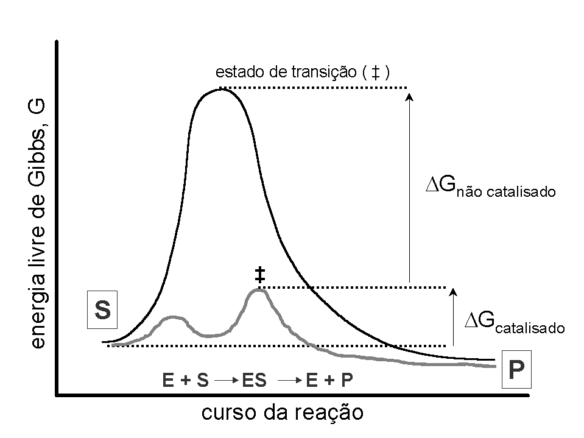

Enzimas
Introdução
Enzimas são proteínas que aceleram reações químicas. Apenas isto. Se uma reação química pode ocorrer, digamos, num intervalo de 30 min, pode haver uma enzima que realize o mesmo trabalho em 0,1 s. Isto é chamado de catálise enzimática. E não significa que a enzima estará atuando no aumento da quantidade de um produto qualquer, mas apenas que ela está acelerando o curso da reação. Neste sentido, as enzimas não atuam no equilíbrio de uma reação química, apenas em sua velocidade.
Existem catalisadores químicos que também aceleram o curso de reações, mas nada se compara à eficiência e especificidade das enzimas.
Na Natureza existem, virtualmente, uma enzima única para cada reação do metabolismo de cada ser vivo. Portanto, enzimas são extraordinariamente específicas. Além disso, e diferentemente de um catalisador químico, as enzimas não são destruidas durante a reação química em que atuam, mas se regeneram inteiras ao final daquela. Para se ter uma idéia dessa eficiência, a enzima que trabalha com o dióxido de carbono no sangue interage com mais de 500 mil moléculas desse gás por segundo, uma por vez, e sai da reação química com esse CO2 do mesmo jeito que entrou, sem nenhuma mudança estrutural.
Praticamente todas as reações que existem no metabolismo de cada ser vivo é catalisada por uma enzima, existindo raros exemplos de reações espontâneas. Isto quer dizer que, se você ingere uma porção de batatas fritas, haverá um grande número de enzimas atuando nessas batatas, umas para diminuir seu tamanho, outras pra trabalhar nos carboidratos da mesma, outras na parte protéica, e assim por diante, até que só restem elementos estruturais básicos, como açúcares simples e aminoácidos, disponíveis ao organismo para absorção.
Mas, se as enzimas são proteínas, por quê nem toda proteína é uma enzima ? Porque nem toda a proteína serve aos caprichos da catálise química, a qual exige uma bolsa especial formada por uns poucos aminoácidos no centro da enzima, região denominada por centro ativo. Para se ter uma idéia do tamanho desse centro ativo, uma enzima responsável pela quebra de alimentos protéicos nos intestinos, a tripsina, possui cerca de 240 aminoácidos em sua estrutura, mas apenas 4 participam da reação química que a acompanha. Então pra que servem os outros 236 aminoácidos ? Pra muita coisa, a mais importante, e inerente à qualquer enzima, para posicionar aqueles poucos aminoácidos mais nervosinhos em sua missão de comer a proteína nos intestinos.
Detalhes
Enzimas são 1) proteínas que 2) catalisam uma reação química (aumento de velocidade) 3) particular (especificidade pelo substrato), 4) mantendo-se íntegras após a mesma ter sido processada. Exemplificando, catalisadores químicos aumentam a velocidade de uma reação no máximo até 104 vezes. Já a anidrase carbônica, que capta o CO2 e o transfere à água para formar o H2CO3-, aumenta a velocidade da reação em 107 vezes, e a urease, enzima que cliva a uréia para o aproveitamento de NH3 pela planta, propicia um aumento de 1014 vezes.
Existe um pequeno grupo de RNA que, além das proteínas, também possui propriedades catalíticas. Apesar das enzimas acelerarem as reações em que atuam, nenhuma altera o equilíbrio da reação. Todas as rotas metabólicas são catalisadas por enzimas, dentro de 6 grandes grupos, classificados conforme a reação em que atuam: oxirredutases (transferência de elétrons), transferases (transferência de grupamentos), hidrolases (transferência de grupos para a água), liases (adição/remoção de grupos em ligações duplas), isomerases (transferência de grupos intra-moleculares para a formação de isômeros), e ligases (formação de ligações com energia acoplada à hidrólise de ATP).
Todas as enzimas possuem uma região em fenda dentro da proteína, formada por poucos aminoácidos, e responsável por sua atividade catalítica, o centro ativo. Nele, ocorre uma altíssima especificidade quimio-estrutural que faz com que a enzima tenha preferencialmente um alvo de catálise, ou seja, apenas um substrato. Exemplificando este grau de especificidade, uma enzima que atua sobre compostos levrógiros (aminoácidos encontrados na natureza, L-Arg, por ex) não atua sobre compostos dextrógiros (D-Arg), parte do sucesso do uso de antibióticos, já que bactérias possuem proteínas de membrana com aminoácidos D. A atuação de enzimas sobre substratos se dá por dois mecanismos principais: modelo chave-fechadura e ajuste induzido.
No primeiro, a especidade estrutural entre a enzima (fechadura) e o substrato (chave) é completa, permitindo uma combinação de ambos por intermédio de forças fracas. No modelo de ajuste induzido, nem sempre há complementaridade estrutural, ocorrendo uma mudança conformacional na estrutura da enzima em contato com o substrato, de modo a ajustar esse último à enzima.
Outras regiões confinadas na estrutura das enzimas permitem que a mesma possa ter sua atividade regulada, ativando-a ou inibindo-a. Assim são os sítios secundários, tais como o sítio de especificidade que direciona o substrato ao encaixe no sítio ativo, e sítios alostéricos associados à alterações conformacionais na enzima mediante a interação com íons ou compostos orgânicos.
Enzimas podem associar-se a fatores imprescindíveis ao seu funcionamento, como cofatores (Mg2+, Mn2+, Ca2+) ou coenzimas (ADP, NADH), e podem ainda estar sujeitas a um controle alostérico. Nesse caso, um excesso de produto pode inibir a enzima que o forma (inibição por retro-alimentação) combinando-se à mesma e mudando a conformação de seu sítio ativo. Exemplificando, o ATP, moeda de troca energética, pode diminuir a atividade de um grande número de enzimas que trabalham no sentido de produzir ATP, tais como hexoquinase, citrato liase e NADH redutase, enzimas envolvidas na produção de energia em qualquer organismo.
O mecanismo pelo qual as enzimas trabalham visa a reduzir a energia gasta para que um processo químico ocorra (energia de ativação), sem alterar o equilíbrio da reação. Exemplificando, isto significa dizer que, se 5 moléculas de A são quimicamente convertidas em 3 moléculas de B, em 100 segundos, a reação catalisada enzimaticamente permitirá a mesma reação, de 5 pra 3, só que em 1 segundo apenas.

A Figura 1 ilustra o mecanismo de ação das enzimas. Neste diagrama, as coordenadas indicam o curso da reação (X), a energia envolvida na reação (Y), a variação de energia sem a enzima (\(\Delta\)G\(_{nãocat}\)), a variação de energia na presença da enzima (\(\Delta\)G\(_{cat}\)), o substrato S, o complexo enzima-substrato ES, o produto P, e o estado de transição (‡). Esse último representa o montante de energia necessária para que uma reação ocorra, quer na ausência ou na presença da enzima.
Neste último caso, diz-se que a enzima estabiliza o estado de transição do substrato (transição, significando o equilíbrio S<–>P). Metaforicamente, o diagrama da Figura 1 pode ser representado como um ciclista (S) buscando chegar ao seu destino (P). Ele pode subir um morro único bastante íngreme (reação não catalisada), gastando para isso muita energia, ou pode pedalar por três pequenos morrinhos (reação catalisada), poupando esforço.
Vários fatores podem influenciar a atividade de enzimas, tais como o pH, a temperatura, a presença de inibidores, etc. Neste último caso, o inibidor pode atuar no centro ativo da enzima (inibidor competitivo) ou fora deste, alterando a conformação do centro (inibidor não competitivo). A eficiência das enzimas pode ser quantitativamente caracterizada através do parâmetro KM (constante de Michaelis-Menten), cujo valor diminui com o aumento da afinidade da enzima por seu substrato.
Aplicação
Atividades enzimáticas são encontradas intra-celularmente (digestão de proteínas por tripsina e quimotripsina, no animal, ou por papaína, no mamão; digestão de carboidratos por ptialina, na saliva, ou por glicosidases, nos tecidos de reserva vegetal) ou extra-celularmente, como nos solos, onde se encontra atividade significativa de celulases (ataque à celulose) e proteinases (ataque à proteínas), além de um grande número de enzimas microbianas celulares, e outras, provenientes de restos de animais e plantas.
No leite de vaca existem mais de 50 enzimas identificadas, associadas a açúcares ou lipídios (fosfatase alcalina, lipase, peroxidase). Enzimas proteolíticas tem sido usadas como amaciantes de carne (papaína, bromelina), na produção de queijos (coagulação láctica pela renina; proteinases fúngicas para o rockefort, cheddar, ou faixa-azul), na panificação (para aumentar a atividade proteolítica do trigo), e na extração de óleos de algumas sementes.
Com relação a esta última, a extração de óleos vegetais com solventes, tais como hexano, pode ser reduzida frente ao emprego de lipases vegetais, com vantagens adicionais de redução de custos e menor impacto ambiental. Nesta direção tem sido empregadas técnicas para a extração de óleo de abacate e de soja, resultando em produtos de valor comercial isentos de contaminantes, como o óleo bruto (características de óleo refinado próprio para consumo), o hidrolizado protéico (próprio para alimentação infantil e dietas especiais), e o extrato insolúvel (próprio para a fabricação e biscoitos e farinhas).
O emprego de enzimas na indústria tem largo espectro em função da grande reatividade química dessas moléculas naturais. Assim, proteases tem sido há muito utilizadas na fabricação de queijos e detergentes, amilases, na sacarificação, indústria têxtil e papeleira, glicoamilases na produção de glicose a partir do amido, pectinases na manufatura de xaropes com alto teor de frutose, celulases na produção de xilose, papel e polpa, xilanases no tratamento de águas residuais e na mal-absorção à lactose, e glicanases, na fabricação de cerveja.
Drogas Para Enzimas
Aproximadamente metade dos fármacos produzidos são direcionados para a inibição de uma atividade enzimática específica. Assim o é com o captopril, o viagra, o xenical, a aspirina e similares, fármacos amplamente utilizados nos dias de hoje, e responsáveis por grande parte do mercado mundial de produtos farmacêuticos de uso humano.
O captopril é um fármaco inibidor da atividade da enzima conversora de angiotensina. Em poucas palavras, essa enzima converte angiotensina I em angiotensina II, cujos metabólitos estão relacionados ao aumento de pressão arterial no organismo. Dessa forma, uma inibição enzimática puntual na conversão para angiotensina II limita os efeitos da hipertensão arterial. O xenical, liberado no Brasil em 1999 como Orlistat, possui um mecanismo de ação originariamente simples.
A degradação e metabolismo de gorduras no organismo, em especial atenção à principal gordura da dieta, o triacilglicerol, envolve o empacotamente desta em proteínas ricas em lipídios, as lipoproteínas. Existe uma enzima de extrema importância nesse processo, a lipase lipoprotéica, que libera continuamente os triacilgliceróis empacotados para o metabolismo animal.
O xenical atua justamente nesta enzima, fazendo com que 30% da gordura injerida pela dieta não seja metabolizada devido à inibição da lipase lipoprotéica. Neste sentido, esse teor de gordura acaba aparecendo nas fezes. O xenical, portanto, bloqueia o mecanismo de absorção de gorduras, não possuindo impacto sobre o sistema nervoso central. Não obstante, possui efeitos colaterais desagradáveis, tais como diarréia, urgência e incontinência fecal. Originalmente, foi desenvolvido nos Estados Unidos para o controle de obesidade mórbida, doença que afeta mais de 100 mil pessoas naquele país, e que está relacionada à pressão alta, hipercolesterolemia e diabetes.
Outra droga de ação enzimática é o Viagra, produzido pela multinacional farmacêutica Pfizer. O viagra foi liberado em 1998 pelo FDA norte-americano (Food and Drug Administration) sob o nome de sildenafil. Originalmente foi uma droga concebida para o tratamento da angina peitoral. Como os pacientes relatavam alto desempenho sexual frente ao uso da droga, o viagra foi posteriormente produzido em escala comercial para o combate da disfunção erétil masculina.
A ação do viagra é a de inibir uma enzima denominada fosfodiesterase 5 (PDE5), cuja função é permitir um esvaziamento sanguíneo dos corpos cavernosos penianos, finda a ejaculação. Fisiologicamente, o enchimento de sangue nos corpos cavernosos ocorre devido a uma alta relaxação muscular produzida pela presença de um mediador denominado GMPc (GMP cíclico). Esse é produzido pela atividade da enzima guanilato ciclase, ativada pelo aumento de NO (óxido nítrico) nos corpos cavernosos que sucede o estímulo sexual.
Neste sentido, o viagra inibe a PDE5, aumentando o tempo de vazão sanguínea no corpo peniano. Finalmente, o mais conhecidos dos fármacos de atividade inibitória enzimática é a aspirina (ácido acetilsalicílico), cujas alterações estruturais levaram ao surgimento dos similares dipirona (Novalgina) e paracetamol (Tylenol), de igual ação. Estes três anti-inflamatórios atuam por inibição competitiva do complexo enzimático da ciclooxigenase sobre o ácido araquidônico, a enzima sendo responsável pela produção de mediadores inflamatórios que produzem algesia e hipertermia (prostaglandinas e leucotrienos), respostas naturais de defesa no Homem.
Enzimas como suplementos
Diversos são os produtos enzimáticos empregados na alimentação de não ruminantes, com o intuito de facilitar a digestibilidade. A maioria das enzimas utilizadas são de origem fúngica, como proteases e celulases associadas em complexos enzimáticos comerciais. Em produção animal, enzimas fibrolíticas são conhecidas aumentar a salivação ruminal devido à compensação pelo aumento nos produtos fermentáveis durante a digestão. De modo geral tem sido largamente empregado enzimas celulases, glicanases, hemicelulases, amilases e amiloglicosidases, proteases, lipases e fitases, para este fim, em teores que variam de 0,1 % a 0,000001 %.
Vários trabalhos tem demonstrado melhoria no aumento do ganho médio diário e na eficiência alimentar de bovinos alimentados com dietas suplementadas com enzimas que apresentem atividade amilolítica, proteolítica e celulolítica, devido a um aumento da digestibilidade da matéria seca e de fibra. Como resultados, melhora na digestibilidade ruminal, aumento de consumo e desempenho animal (ganho de peso, conversão alimentar, produção de leite).
Em dietas avícolas, cuja base é de milho e farelo de soja, são empregados enzimas livres ou sistemas multienzimáticos. Exemplos constituem as xilanases e pectinases, para a redução da viscosidade digestória intestinal, glicanases, na redução de ovos sujos, celulases para o aumento da digestibilidade de matéria seca, proteases, amilases e fitases, essa últma para aumentar a utilização de fósforo vegetal e remover o ácido fítico antinutricional.
A fitase vegetal ou microbiana possui particular interesse porque permite a liberação de fósforo vegetal simultaneamente à degradação de ácido fítico. Entre as matérias minerais acrescentadas à ração, o fósforo constitui a mais onerosa, cobrindo até 2,5 % do valo final da fórmula em avicultura. Além disso, as matérias-primas vegetais, como leguminosas, oleaginosas e cereais, contém de 45 a 75 % do fósforo sob a forma de fitato, um sal de cálcio ou magnésio de mioinositol hexafosfórico, o mais abundante dos fosfoglicosídios. Esse sal é mal aproveitado pelas aves, sendo normalmente eliminado nas fezes, significando um desperdício e um aumento significativo da poluição ambiental. Em pintos de corte a adição de fitase a 500 UI/kg de ração tem aumentado a concentração de cálcio e zinco nos ossos das aves, além de reduzir a quantidade de fósforo presente nas excretas, aumentando-o ainda, juntamente com cálcio, zinco e nitrogênio, nos tecidos animais.
Inibidores enzimáticos e resistência vegetal a insetos.
Pragas e patógenos responsáveis por grandes perdas na agricultura tem sido associados a um nível de 37 % em relação à produção global, com 13 % destas perdas sendo atribuidas a insetos. As plantas possuem limitado grau de resistência a estas pragas, viabilizada pela produção natural de antibióticos, alcalóides, terpenos e proteínas. Entre essas últimas, quitinases que atacam a carapaça de insetos, lectinas inibidoras do controle do ciclo celular, e inibidores protéicos de enzimas digestivas, tais como inibidores e \(\alpha\)-amilase e de proteinases. Inibidores do primeiro grupo são largamente identificados em cereais, leguminosas e outras famílias.
Entre os inibidores de proteinases, encontram-se endopeptidases que hidrolizam ligações peptídicas internas de proteínas, como inibidores de serino, cisteino, aspartato e metalo-proteinases, todos importantes contra o ataque de coleópteros. Inicialmente identificados em orgãos de reserva de plantas, tais como sementes e tubérculos, inibidores de proteinase são hoje conhecidos atuar em folhas e frutos, totalizando sua ação em exemplares diversos, tais como tabaco, batata, tomate, arroz, alface, maçã, canola e morango.
Pesticidas , inibidores enzimáticos e armas químicas.
Armas químicas são utilizadas em batalhas desde tempos imemoriais, quando a história tem registrato relatos do emprego de fumaça de enxofre ardente durante invasões territoriais. Curiosamente, o conhecimento e uso de artefatos químicos atualmente utilizados em tempos de guerra remonta à necessidade de combate à pragas de lavouras, através do emprego de pesticidas organoclorados e fosfoclorados, como o parathion. Gases a base de cloro, enxofre e fósforo foram e são os mais comumente utilizados tanto como pesticidas e inseticidas, como na insanidade da guerra química.
Os registros históricos do século passado relatam uma abertura, por morte ou fuga, de um flanco de 9 km por tropas francesas atacadas pelos soldados alemães com 180 toneladas de cloro gasoso no canal de Yser, França, durante a 1a. Guerra Mundial, em 1915. Na época, o chefe do Serviço de Guerra Química alemã, Fritz Harber, foi agraciado com o Prêmio Nobel de Química em 1918, por ter sintetizado em laboratório uma molécula de amônica, NH3, apartir de nitrogênio gasoso, N2. Paralelamente, Fritz Harber comandou mais de 200 ataques químicos aos aliados. Em 1929 a Alemanha conquista a síntese do primeiro agente nervoso de uso bélico, o tabun, inicialmente produzido como inseticida. O tabun marca os agentes do tipo G (vide figura), classificação norte-americana baseada na toxicidade e persistência ambiental. Durante a 1a. e 2a. Guerra Mundiais, mais de 190 mil toneladas de agentes químicos foram propagados nos combates em terra. Os relatos de morte por gás emitido de chuveiros em alguns campos de concentração nazistas, por exemplo, identificam o Zyklon B, potente organofosforado tipo G, como agente químico letal, agindo em poucos segundos e propiciando morte dolorosa acompanhada de defecação e descontrole urinário.
Nas palavras aparentemente proferidas por Albert Spier, o Ministro de Produção de Hitler durante a 2a. Guerra Mundial, “a síntese e emprego têm de ser insanas, frente à superioridade da aviação norte-americana”. Em 1944 surge outro organofosforado potente, o soman. De 1942 a 1945, 12 mil toneladas de gás tabun são utilizados na Grande Guerra.
Em 1950 surge uma nova geração de agentes neurotóxicos, os tipo V, dez vezes mais potentes que os tipo G, e cujo mecanismo de atuação se dá por inibição da acetilcolinesterase. Mais uma vez, os agentes tipo V foram sintetizados a partir da pesquisa com pesticidas (amiton, produzido em 1953). Essa enzima, responsável pela hidrólise da acetilcolina mediadora do impulso nervoso, torna-se inibida competitivamente pelos agentes tipo V, propiciando a continuidade de um impulso nervoso em situação não fisiológica, e acarretando progressiva angústia, perda da coordenação, defecação, aumento do peristaltismo, coma e morte.
Em 1958 aparece a última geração de neurotóxicos, os agentes VX, como o Russian-VX. Uma gota do agente VX na pele é capaz de matar um ser humano em poucos minutos. . Além disso, o VX possui uma toxicidade 26 vezes superior ao cianureto e, diferentemente desse e dos agentes tipo G, uma persistência ambiental superior a 60 h. O longa-metragem “A Rocha”, com Nicholas Cage e Sean Connery, exibido no Brasil em 2000, simula uma extorsão terrorista através da ameaça do uso de mísseis contendo VX direcionados à Manhattan. Em 1995 uma seita religiosa denominada Verdade Suprema ataca o metrô japones com gás sarin, um agente tipo G (vide figura) descoberto em 1938, matando 11 pessoas por complicações cardiorespiratórias, e deixando feridas mais de 5500. Não era a primeira vez em que se empregava o gás sarin.
De 1984 a 1988 o Iran utilizou largamente o sarin contra o Iraque de Saddan Hussein. Apesar de possuir toxicidade e persistência inferiores aos agentes tipo VX, meio grama de sarin é suficiente para se atingir uma dose letal do composto. No tratamente emergencial contra os efeitos do gás sarin, é normalmente utilizado atropina ou diazepan. Em 1997 a Convenção de Paris proibiu a produção e manutenção de agentes químicos em todos os 170 países signatários do tratado, fixando ainda um prazo de 10 anos para a destruição completa dos arsenais existentes em todo o mundo. Ainda assim, em 2001, o serviço de inteligência britânico levantou a suspeita não confirmada da existência de sarin, tabun e gás mostarda (desfolhante empregado na guerra da Coréia), em mísseis Scud estocados no Iraque.
A última crise envolvendo a produção de armas químicas foi deflagrada pelo presidente americano George Bush contra a pessoa do presidente iraquiano Saddan Hussein, o qual foi sistematicamente acusado de possuir arsenais de destruição em massa em seu território, e de estar arquitetonicamente envolvido nos ataques às torres do World Trade Center em setembro de 2001.
À despeito da ausência de provas incontestes sobre a existência ou não de armamento químico e/ou biológico, forças de coalização encabeçadas pelos Estados Unidos e Inglaterra invadiram o Iraque em março de 2003, com o intuito apregoado de erigir uma novo alicerce democrático na região, simultaneamente reduzindo ao máximo as possibilidades de terrorismo árabe no Ocidente. Este fato mobilizou a opinião pública mundial por inaugurar um belicismo sustentado pelo argumento do combate por ataque preventivo.